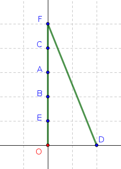
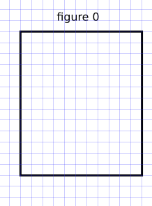
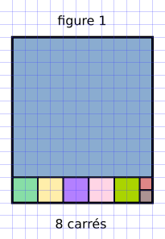
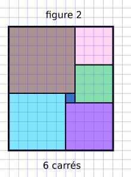
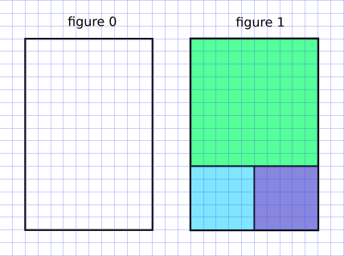

4.6 Algorithmes gloutons⚓︎
en anglais : greedy algorithms


Définition 
Un algorithme est qualifié de glouton si le problème qu'il essaie de résoudre est décomposé en une succession de problèmes identiques pour lesquels l'algorithme va chercher une solution optimale.
La question (presque philosophique) est :
Lorsqu'on fait à chaque étape le meilleur choix possible, est-ce que la solution finale à laquelle on arrive est la meilleure possible ?
Formulé autrement :
Est-ce que faire le meilleur choix à chaque étape nous assure le meilleur choix global ?
1. Exemples d'algorithmes gloutons⚓︎
1.1 Un plus court chemin ?⚓︎
- Vous partez du point O.
- Vous devez avoir atteint le plus rapidement possible tous les points A, B, C, D, E, F.
- L'ordre de parcours des points n'est pas important.

La philosophie de l'algorithme glouton implique qu'à chaque étape, vous allez vous diriger vers le point le plus proche.
Quel est alors le parcours final ?
Réponse
Voilà ce que donnerait l'algorithme glouton : 
Ce chemin est-il optimal ?
Réponse
Non ! Celui ci-dessous est meilleur :

Le fait d'avoir privilégié à chaque étape le meilleur choix local nous a empêché de voir le meilleur choix global.
1.2 Remplir un rectangle avec des carrés⚓︎
(d'après S.Tummarello et E.Buonocore)
On considère un rectangle de dimension 11 sur 13 (figure 0). On veut remplir ce rectangle avec le minimum de carrés.

Un algorithme glouton va chercher à positionner d'abord le plus grand carré possible (figure 1) :

C'est une stratégie efficace (8 carrés nécessaires), mais qui n'est pas optimale !
stratégie optimale
La figure 2 présente un pavage avec seulement 6 carrés. 
Question : Est-ce qu'un algorithme glouton va toujours passer à côté de la solution optimale ?
Non ! Il arrive aussi qu'il donne la solution optimale. Changeons le rectangle initial en un rectangle de 10 sur 15 :

Dans cette situation, l'algorithme glouton nous amène à la solution optimale.
Conclusion⚓︎
Un algorithme glouton est une méthode rapide et souvent efficace, mais qui ne garantit pas l'optimalité de la solution trouvée.
 La succession de meilleurs choix LOCAUX va nous amener à une bonne solution GLOBALE, mais ne nous garantit pas d'arriver à la solution optimale.
La succession de meilleurs choix LOCAUX va nous amener à une bonne solution GLOBALE, mais ne nous garantit pas d'arriver à la solution optimale.
2. Le problème du rendu de monnaie⚓︎
Nous allons travailler avec des pièces (ou billets) de 1, 2, 5, 10, 20, 50, 100, 200 euros.
L'objectif est de créer un programme renvoyant, pour une somme somme_a_rendre entrée en paramètre, la combinaison utilisant un minimum de pièces ou de billets pour fabriquer la somme somme_a_rendre.
Par exemple, lorsque vous payez avec 20 € un objet coûtant 11 €, vous préférez qu'on vous rende vos 9 € de monnaie par \(9 = 5 + 2 + 2\) plutôt que par \(9=2+2+2+1+1+1\)
La résolution de ce problème peut se faire de manière gloutonne : à chaque étape, vous allez essayer de rendre la plus grosse pièce (ou billet) possible.
Activité de découverte de l'algorithme
2.1 Solution du problème⚓︎
Rendu de monnaie
1 2 3 4 5 6 7 8 9 10 11 | |
- On part du 1er indice -> la plus grande pièce
- Est-ce que la pièce peut être rendue ?
- On garde la pièce dans la liste
solution - On met à jour la somme à rendre.
- La pièce était trop grosse, on avance dans la liste.
Utilisation : rendu(13) doit renvoyer [10, 2, 1]
>>> rendu(13)
[10, 2, 1]
>>> rendu(58)
[50, 5, 2, 1]
2.2 Une solution optimale ?⚓︎
Imaginons qu'il n'y ait plus de pièces de 10 et 5 euros. Faites fonctionner votre algorithme pour la somme de 63 euros.
>>> rendu(63)
[50, 2, 2, 2, 2, 2, 2, 1]
Damned ! Mais ce n'est pas une solution optimale !
[20, 20, 20, 2, 1] serait bien mieux.
Moralité : Lors d'un rendu de monnaie, l'algorithme glouton n'est optimal que sous certaines conditions, ce qui est un peu décevant. Un système de monnaie qui rend l'algorithme glouton est dit canonique (tous les systèmes monétaires actuels le sont, mais le système monétaire brittanique avant 1971 ne l'était pas !). Il est (très) difficile de caractériser mathématiquement si un système de monnaie est canonique ou pas.
3. Le problème du sac à dos (Knapsack Problem)⚓︎

Le problème est celui-ci : vous disposez d'un sac d'une contenance limitée (sur le dessin ci-dessus, 15kg) dans lequel vous allez mettre des objets qui ont un certain poids et une certaine valeur.
Vous souhaitez maximiser la valeur totale des objets que vous mettez dans votre sac.
Evidemment, la somme de leur masse ne doit pas dépasser 15 kg.
Ce problème (de la catégorie des problème dits d'analyse combinatoire) malgré sa simplicité est un problème majeur d'optimisation.
Où en est-on de la recherche académique sur le problème du sac à dos ?
Actuellement :
- On sait trouver LA meilleure solution, mais en explorant toutes les combinaisons une par une. Cette méthode par force brute est inapplicable si beaucoup d'objets sont en jeu. (nous allons le faire)
- On sait facilement trouver une bonne solution, mais pas forcément la meilleure, par exemple en adoptant une stratégie gloutonne. (nous allons le faire)
- On ne sait pas trouver facilement (en temps polynomial) la meilleure solution. Si vous y arrivez, 1 Million de $ sont pour vous. (nous n'allons pas le faire)
3.1 Petite aide technique avant de commencer⚓︎
Supposons qu'on dispose d'une liste mylist = [["A",3], ["B",2], ["C",8]].
Comment classer les éléments de cette liste par leur deuxième élément ???
Nous allons procéder en 2 temps.
3.1.1 Une fonction qui renvoie le deuxième élément⚓︎
Exercice 1
Créer une fonction deuxieme qui prend en paramètre un tableau lst de type List et qui renvoie le deuxième élément de lst.
Exemple d'utilisation
>>> simpsons = ['Bart', 'Lisa', 'Maggie']
>>> deuxieme(simpsons)
'Lisa'
3.1.2 Tri de la liste grâce à cette fonction deuxieme⚓︎
Nous allons utiliser la fonction sorted, qui prend en paramètre une liste à trier et une fonction de tri.
Exemple :
>>> mylist = [["A", 3], ["B", 2], ["C", 8]]
>>> mynewlist = sorted(mylist, key=deuxieme, reverse=True)
>>> mynewlist
[['C', 8], ['A', 3], ['B', 2]]
Exercice 2
On considère une liste releve de 100 élèves avec leur note.
(liste créée grâce au module magique faker)
releve = [['Lucas', 13], ['Patrick', 4], ['Michelle', 15], ['Emmanuel', 8], ['Jacqueline', 3], ['Laurent', 11], ['Marcelle', 18], ['Maurice', 14], ['Michelle', 12], ['Michelle', 16], ['Alexandra', 12], ['Patricia', 18], ['Danielle', 15], ['Marc', 2], ['Hélène', 3], ['Benjamin', 16], ['Laetitia', 2], ['Hugues', 10], ['Samuel', 14], ['Émilie', 6], ['Emmanuel-Maurice', 15], ['Laurent', 13], ['Stéphane', 11], ['David', 16], ['Yves', 7], ['Xavier', 12], ['Véronique-Pauline', 6], ['Vincent-Hugues', 15], ['Céline', 11], ['Éric-Alain', 19], ['Samuel', 13], ['Grégoire', 16], ['Élodie', 13], ['Daniel', 2], ['Joseph', 18], ['Mathilde', 18], ['Claudine', 16], ['Jean', 12], ['Marcel', 8], ['Nicolas', 7], ['Luc', 11], ['Gabrielle', 8], ['Marianne', 8], ['Paul-Stéphane', 3], ['Florence', 18], ['Joseph', 18], ['Alice', 2], ['Frédérique', 17], ['Laurent', 4], ['Béatrice', 10], ['Agnès-Cécile', 13], ['Joséphine', 3], ['Gilbert', 8], ['Claire', 15], ['Tristan', 7], ['Nathan', 18], ['Cécile', 7], ['Laurent-Roland', 14], ['Christine', 14], ['Olivier', 4], ['Patrick', 18], ['Margot', 11], ['Jessica', 9], ['Guillaume', 19], ['Nicole', 8], ['Louise', 11], ['Kevin', 11], ['Hugues-Martin', 19], ['Emmanuel', 10], ['Nicolas', 5], ['Christiane', 7], ['Charles', 8], ['Paulette', 15], ['Colette', 7], ['Vanessa-Émilie', 6], ['Élise', 5], ['Denis', 2], ['Alfred', 20], ['Simone', 3], ['Océane-Joséphine', 9], ['Henri', 10], ['Rosalie', 6], ['Dorothée', 9], ['Rémy', 8], ['Marcel', 18], ['Odette', 19], ['Monique', 15], ['Mathieu', 12], ['Anne', 9], ['Stéphanie-Dominique', 9], ['Astrid', 10], ['René', 17], ['Laurence', 11], ['Océane', 16], ['Hugues', 7], ['Gérard', 11], ['Xavier', 4], ['Patricia', 19], ['Aurélie', 17], ['Théodore', 5]]
Quel est l'élève qui a obtenu la meilleure note ?
Correction
1 2 3 4 5 6 7 8 | |
3.2 Retour sur le problème du sac à dos⚓︎
Le problème
On considère un sac de 40 kg et les objets suivants :
| objet | A | B | C | D | E | F |
|---|---|---|---|---|---|---|
| masse (en kg) | 13 | 12 | 8 | 10 | 14 | 18 |
| valeur (en €) | 700 | 500 | 200 | 300 | 600 | 800 |
Quels objets faut-il prendre ?
 Vous ne pouvez prendre qu'un seul objet de chaque type
Vous ne pouvez prendre qu'un seul objet de chaque type
(interdiction de donner la combinaison A-A-D, par exemple)
Stratégie gloutonne :
- on va classer les objets dans l'ordre décroissant de leur taux de valeur (taux de valeur = valeur / masse). Ainsi le premier élément de la liste sera celui ayant le meilleur rapport valeur/masse.
- on prend le premier élément de la liste, puis le deuxième, etc., tant que le sac peut encore les contenir.
3.2.1 Classement des objets⚓︎
On considère la liste
objets = [["A", 13, 700], ["B", 12, 500], ["C", 8, 200], ["D", 10, 300], ["E", 14, 600], ["F", 18, 800]]
Exercice 3
Créer une fonction ratio qui prend en paramètre une liste objet décrivant un objet (exemple : ["C", 8, 200] ) et qui renvoie le nombre valeur/masse (donc le 3ème élément divisé par le 2ème).
Exemple d'utilisation :
>>> ratio(['C', 8, 200])
25.0
Correction
1 2 | |
Exercice 4
Créer une liste objets_tries qui reprend les objets de la liste objets, classés suivant leur taux de valeur (ratio valeur/masse)
Correction
1 2 3 4 5 6 | |
3.2.2 Calcul de la solution, par méthode gloutonne⚓︎
Contrairement à l'algorithme du rendu de monnaie, où chaque pièce est disponible en quantité infinie, on ne possède ici qu'un seul objet de chaque type.
Cela signifie qu'il va suffir de parcourir la liste des objets (préalablement classés suivant leur taux de valeur) et de décider à chaque fois si cet objet peut être pris ou pas.
Exercice 5
Écrire l'algorithme de résolution gloutonne du problème du sac à dos pour la liste objets.
objets = [['A', 13, 700], ['B', 12, 500], ['C', 8, 200], ['D', 10, 300], ['E', 14, 600], ['F', 18, 800]]
1 2 3 4 5 6 7 8 9 10 11 12 13 14 15 16 17 | |
Correction
1 2 3 4 5 6 7 8 9 10 11 12 13 14 15 16 17 | |
>>> butin
['A', 'F', 'C']
>>> poids_sac
39
Il faut donc choisir la combinaison A, F, C. Elle est bien valide (poids 39) et rapporte 1700.
Question (toujours la même) :
L'algorithme glouton nous a-t-il donné la solution optimale ?
Nous allons pour cela avoir recours à la force brute pour tester toutes les combinaisons possibles.
3.3 Force brute⚓︎
- Il faut créer une liste de mots binaires qui vont correspondre à chaque combinaison. Par exemple,
101001signifiera qu'on prend les objets A, C et F. Cette liste est de taille \(2^n\), où \(n\) est le nombre d'objets. C'est cela qui pose problème : avec 80 objets, on obtient une liste à traiter qui contient plus de \(10^{24}\) objets, soit de l'ordre de grandeur du nombre d'étoiles dans l'Univers observable, ou de gouttes d'eau dans la mer, ou du nombre de grains de sables au Sahara... (voir https://fr.wikipedia.org/wiki/Ordres_de_grandeur_de_nombres ) - Une fois cette liste établie, il suffit de parcourir chaque élément et de calculer le poids total et la valeur totale correspondante. Si le poids total dépasse le poids autorisé, on met la valeur à 0 car cette combinaison ne nous intéresse pas.
- Il ne reste qu'à chercher la valeur maximale et regarder la combinaison à laquelle elle correspond.
objets = [["A", 13, 700], ["B", 12, 500], ["C", 8, 200], ["D", 10, 300], ["E", 14, 600], ["F", 18, 800]]
poids_max = 40
3.3.1 La liste de tous les mots possibles⚓︎
combinaisons = []
for i in range(2**len(objets)):
k = bin(i)[2:]
s = '0'*(len(objets)-len(k)) + k
combinaisons.append(s)
La liste combinaisons contient bien les 64 mots possibles (\(2^6=64\)) :
>>> combinaisons
['000000',
'000001',
'000010',
'000011',
'000100',
'000101',
'000110',
'000111',
'001000',
'001001',
'001010',
'001011',
'001100',
'001101',
'001110',
'001111',
'010000',
'010001',
'010010',
'010011',
'010100',
'010101',
'010110',
'010111',
'011000',
'011001',
'011010',
'011011',
'011100',
'011101',
'011110',
'011111',
'100000',
'100001',
'100010',
'100011',
'100100',
'100101',
'100110',
'100111',
'101000',
'101001',
'101010',
'101011',
'101100',
'101101',
'101110',
'101111',
'110000',
'110001',
'110010',
'110011',
'110100',
'110101',
'110110',
'110111',
'111000',
'111001',
'111010',
'111011',
'111100',
'111101',
'111110',
'111111']
3.3.2 Calculer le poids et la valeur de chaque combinaison⚓︎
Exercice 6
Créer une fonction poids_valeur_comb qui prend en paramètre une combinaison comb et qui renvoie son poids et sa valeur.
Exemple :
>>> poids_valeur_comb('100101')
(41, 1800)
Correction
1 2 3 4 5 6 7 8 9 10 | |
3.3.2 Force brute⚓︎
Exercice 7
Compléter le code ci-dessous.
1 2 3 4 5 6 7 8 9 10 11 12 13 14 15 16 17 18 19 | |
>>> mot_sol
'ABE'
Damned ! La force brute a mis en évidence une combinaison meilleure que celle donnée par l'algorithme glouton.
En effet la combinaison A-B-E est bien valide (poids total 39) et rapporte 1800, donc 100 de mieux que la solution gloutonne.
Par contre, la force brute est inenvisageable pour si le nombre d'objets est grand, alors que la stratégie gloutonne reste très rapide.
Conclusion
La stratégie gloutonne donne très rapidement des solutions satisfaisantes mais pas forcément optimales. Pour beaucoup de problèmes (dont le problème du sac à dos), la recherche d'une solution optimale sans passer par la force brute semble impossible (mais cela n'est pas (encore ?) démontré).
Dans ce cas-là, la stratégie gloutonne peut être employée pour avoir vite et bien une solution convenable, même si peut-être non optimale. On dit que la stratégie gloutonne est une heuristique de résolution. On sait que ce n'est pas forcément optimal, mais faute de mieux, on s'en contente...